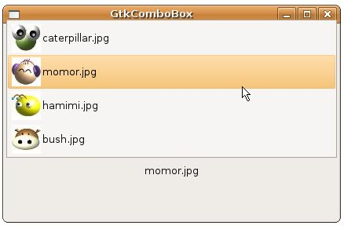

在 GtkComboBox 中的範例，是GtkComboBox最簡單的用法，選項只有純文字，若想要進一步讓GtkComboBox呈現更多的功能與樣貌，則必須了解GtkComboBox的Model-View設計。
GtkComboBox的外觀是View物件的部份，選項資料的部份則是Model物件的部份，GtkComboBox使用的Model物件為實作 GtkTreeModel介面的物件，例如GtkListStore或GtkTreeStore，其實作了Model物件的資料儲存與存取方式等，在這邊 先介紹GtkComboBox與GtkListStore的使用。
GtkListStore是沒有階層平坦式的資料，當下拉選單需要的是直接列示選項就可以使用，GtkListStore中可以設定文字、圖片、元件等，要建立GtkListStore，必須指明要建立幾個欄位以及欄位中的型態，例如：
GtkListStore *store = gtk_list_store_new(2, GDK_TYPE_PIXBUF, G_TYPE_STRING);
這個程式片段將建立一個具有兩個欄位的GtkListStore，一個欄位儲存圖片，使用GDK_TYPE_PIXBUF來指定，欄位將儲存的是GdkPixbuf，另一個儲存文字，使用G_TYPE_STRING來指定。
您可以使用gdk_pixbuf_new_from_file()讀取圖檔並傳回其GdkPixbuf，第二個參數是GError，若不需要可以設定為NULL：
GdkPixbuf *pixbuf = gdk_pixbuf_new_from_file(files[i], NULL);
GtkListStore使用GtkTreeIter作為內部的資料位置指標，當您使用gtk_list_store_append()時，會將 GtkTreeIter指向GtkListStore下一列的位置，接著您再搭配gtk_list_store_set()設定GtkListStore 該位置的欄位資料，例如：
GtkTreeIter iter;
gtk_list_store_append(store, &iter);
gtk_list_store_set(store, &iter,
0, pixbuf,
1, filename,
-1);
gtk_list_store_append(store, &iter);
gtk_list_store_set(store, &iter,
0, pixbuf,
1, filename,
-1);
gtk_list_store_set()的前兩個參數分別為GtkListStore與GtkTreeIter，之後則兩兩成對指定欄位索引與資料，最後以-1作為結束。
有了GtlListStore這個Model物件之後，接著可以用以建立View，也就是GtkComboBox，您可以使用gtk_combo_box_new_with_model()來建立：
GtkWidget *comboBox = gtk_combo_box_new_with_model(GTK_TREE_MODEL(store));
您的資料要如何顯示，需要對應的GtkCellRenderer來進行繪製，哪個欄位要使用哪個 GtkCellRenderer以及該欄位的一些相關屬性，則要告知GtkCellLayout，GtkComboBox有實作 GtkCellLayout介面，因此，您可以如下使用gtk_cell_layout_pack_start()設定GtkCellRenderer繪 製哪個欄位，以及使用gtk_cell_layout_set_attributes()設定相關屬性：
GtkCellRender *render;
renderer = gtk_cell_renderer_pixbuf_new();
gtk_cell_layout_pack_start(GTK_CELL_LAYOUT(comboBox), renderer, FALSE);
gtk_cell_layout_set_attributes(GTK_CELL_LAYOUT(comboBox), renderer,
"pixbuf", 0, // "pixbuf" 設定圖像
NULL); // 最後以 NULL 結尾
renderer = gtk_cell_renderer_text_new();
gtk_cell_layout_pack_start(GTK_CELL_LAYOUT(comboBox), renderer, FALSE);
gtk_cell_layout_set_attributes(GTK_CELL_LAYOUT(comboBox), renderer,
"text", 1, // "text" 設定文字
NULL);
renderer = gtk_cell_renderer_pixbuf_new();
gtk_cell_layout_pack_start(GTK_CELL_LAYOUT(comboBox), renderer, FALSE);
gtk_cell_layout_set_attributes(GTK_CELL_LAYOUT(comboBox), renderer,
"pixbuf", 0, // "pixbuf" 設定圖像
NULL); // 最後以 NULL 結尾
renderer = gtk_cell_renderer_text_new();
gtk_cell_layout_pack_start(GTK_CELL_LAYOUT(comboBox), renderer, FALSE);
gtk_cell_layout_set_attributes(GTK_CELL_LAYOUT(comboBox), renderer,
"text", 1, // "text" 設定文字
NULL);
以上這些大致上是設定GtkComboBox的Model與View的基本流程。假設現在使用者選擇下拉清單中的選項，則要取得選項資料，則需先取得 Model，也就是CtkComboBox中的GtkListStore，並取得選中的選項之GtkTreeIter（記得嗎？GtkTreeIter指 向GtkListStore中的某列資料），然後再使用gtk_tree_model_get()取得想要的欄位值，例如：
gboolean combo_changed(GtkComboBox *comboBox, GtkLabel *label) {
GtkTreeModel *model = gtk_combo_box_get_model(comboBox);
GtkTreeIter iter;
gchar *active;
gtk_combo_box_get_active_iter(comboBox, &iter);
gtk_tree_model_get(model, &iter,
1, &active,
-1);
gtk_label_set_text(label, active);
}
GtkTreeModel *model = gtk_combo_box_get_model(comboBox);
GtkTreeIter iter;
gchar *active;
gtk_combo_box_get_active_iter(comboBox, &iter);
gtk_tree_model_get(model, &iter,
1, &active,
-1);
gtk_label_set_text(label, active);
}
綜合以上說明，來改寫一下GtkComboBox 中的範例，讓下拉選項可以擁有一個小圖示：
- gtk_combo_box_with_icon_demo.c
#include <gtk/gtk.h>
enum {
PIXBUF_COL,
TEXT_COL
};
GtkTreeModel* createModel() {
const gchar *files[] = {"caterpillar.jpg", "momor.jpg",
"hamimi.jpg", "bush.jpg"};
GdkPixbuf *pixbuf;
GtkTreeIter iter;
GtkListStore *store;
gint i;
store = gtk_list_store_new(2, GDK_TYPE_PIXBUF, G_TYPE_STRING);
for(i = 0; i < 4; i++) {
pixbuf = gdk_pixbuf_new_from_file(files[i], NULL);
gtk_list_store_append(store, &iter);
gtk_list_store_set(store, &iter,
PIXBUF_COL, pixbuf,
TEXT_COL, files[i],
-1);
gdk_pixbuf_unref(pixbuf);
}
return GTK_TREE_MODEL(store);
}
gboolean combo_changed(GtkComboBox *comboBox, GtkLabel *label) {
GtkTreeModel *model = gtk_combo_box_get_model(comboBox);
GtkTreeIter iter;
gchar *active;
gtk_combo_box_get_active_iter(comboBox, &iter);
gtk_tree_model_get(model, &iter,
1, &active,
-1);
gtk_label_set_text(label, active);
}
int main(int argc, char *argv[]) {
GtkWidget *window;
GtkWidget *comboBox;
GtkCellRenderer *renderer;
GtkWidget *label;
GtkWidget *vbox;
gtk_init(&argc, &argv);
window = gtk_window_new(GTK_WINDOW_TOPLEVEL);
gtk_window_set_title(GTK_WINDOW(window), "GtkComboBox");
gtk_window_set_default_size(GTK_WINDOW(window), 200, 50);
comboBox = gtk_combo_box_new_with_model(createModel());
gtk_combo_box_set_active(GTK_COMBO_BOX(comboBox), 0);
renderer = gtk_cell_renderer_pixbuf_new();
gtk_cell_layout_pack_start(GTK_CELL_LAYOUT(comboBox), renderer, FALSE);
gtk_cell_layout_set_attributes(GTK_CELL_LAYOUT(comboBox), renderer,
"pixbuf", PIXBUF_COL,
NULL);
renderer = gtk_cell_renderer_text_new();
gtk_cell_layout_pack_start(GTK_CELL_LAYOUT(comboBox), renderer, FALSE);
gtk_cell_layout_set_attributes(GTK_CELL_LAYOUT(comboBox), renderer,
"text", TEXT_COL,
NULL);
label = gtk_label_new("caterpillar.jpg");
vbox = gtk_vbox_new(TRUE, 5);
gtk_box_pack_start(GTK_BOX(vbox), comboBox, TRUE, TRUE, 5);
gtk_box_pack_start(GTK_BOX(vbox), label, TRUE, TRUE, 5);
gtk_container_add(GTK_CONTAINER(window), vbox);
g_signal_connect(GTK_OBJECT(comboBox), "changed",
G_CALLBACK(combo_changed), label);
g_signal_connect(GTK_OBJECT(window), "destroy",
G_CALLBACK(gtk_main_quit), NULL);
gtk_widget_show_all(window);
gtk_main();
return 0;
}一個執行的結果如下所示：
